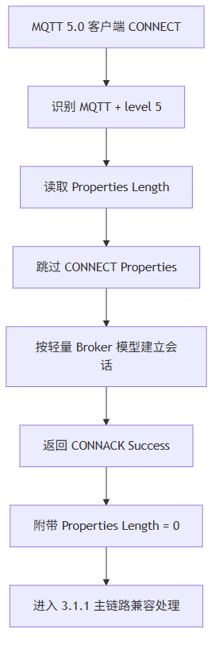

这一篇是 MQTT 5.0 加更。结论很直接：PLC 侧轻量 Broker 应该支持 MQTT 5.0 基础兼容接入，但当前阶段不应该盲目追完整 MQTT 5.0 属性系统。工业现场更需要稳定、可诊断、易维护。
适合谁收藏
- 客户端选择 MQTT 5.0 后连不上 Broker 的人
- 不确定 PLC Broker 是否要完整支持 MQTT 5.0 的人
- 正在写产品功能边界说明的人
- 想避免被“新版本”带偏工程节奏的人
客户端界面里有个选项：
MQTT 5.0很多人会本能觉得：
新版本肯定更好，那 Broker 也必须完整支持 5.0。
先给结论：
PLC 侧轻量 Broker 应该兼容 MQTT 5.0 客户端连接。 但不应该在当前阶段盲目实现完整 MQTT 5.0 属性系统。
这不是保守。 这是工程取舍。
一、MQTT 5.0 到底多了什么
MQTT 5.0 相比 3.1.1，多了大量属性和原因码。
| 类别 | 示例 |
|---|---|
| 连接属性 | Session Expiry、Receive Maximum、Maximum Packet Size |
| 发布属性 | Payload Format Indicator、Message Expiry、Topic Alias |
| 订阅属性 | Subscription Identifier、No Local、Retain Handling |
| 用户属性 | User Property |
| 响应信息 | Reason String、Server Reference |
这些能力对云平台和大型 Broker 很有价值。
但对一个 PLC 内置轻量 Broker 来说，每个属性都意味着：
- 更多解析分支。
- 更多缓冲区边界。
- 更多状态字段。
- 更多兼容测试矩阵。
- 更多现场误用可能。
二、当前 Broker 的 MQTT 5.0 策略
当前策略是“基础兼容”，不是“完整实现”。

| 项目 | 当前处理 |
|---|---|
| CONNECT level 5 | 接受 |
| CONNECT Properties | 读取属性长度并跳过 |
| CONNACK | 返回 Success + 零属性长度 |
| PUBLISH Properties | 基础跳过 |
| 完整属性语义 | 暂不实现 |
| Reason String / User Property | 暂不实现 |
也就是说，客户端选择 MQTT 5.0 时能连上、能基础发布订阅，但不能把它当成具备完整 5.0 属性语义的服务器。
这句话必须写进手册，不能含糊。
三、为什么零属性响应很关键
MQTT 3.1.1 CONNACK：
20 02 00 00MQTT 5.0 CONNACK：
20 03 00 00 00多出来的最后一个 00 是 Properties Length。
| 字节 | MQTT 5.0 CONNACK 含义 |
|---|---|
20 | CONNACK |
03 | Remaining Length |
00 | Acknowledge Flags |
00 | Reason Code |
00 | Properties Length = 0 |
如果 Broker 少发这个字节，有些客户端会表现成：
- 连接时变量闪烁。
- 客户端显示连接失败。
- Broker 槽位接入后立刻释放。
- 工具日志只给
rc -1，看不出细节。
四、完整 MQTT 5.0 会把轻量 Broker 拉向另一条路
如果完整支持 MQTT 5.0，至少要继续做：
| 能力 | 复杂度来源 |
|---|---|
| Session Expiry | 需要会话生命周期和离线状态 |
| Receive Maximum | 影响 QoS 并发窗口 |
| Maximum Packet Size | 影响所有构包和拒绝策略 |
| Topic Alias | 需要每连接别名表 |
| Message Expiry | 需要消息过期时间管理 |
| Subscription Identifier | 影响路由和返回属性 |
| User Property | 需要变长属性保存和转发 |
这些都不是“加几个字段”。
它会改变 Broker 的资源模型。
而当前 PLC Broker 的第一优先级是：
小规模、稳定、低延迟、可诊断、易维护。
不是把 MQTT 5.0 标准逐页复刻。
五、工业现场推荐怎么选版本
| 场景 | 建议 |
|---|---|
| 普通 PLC、HMI、上位机、调试工具 | 优先 MQTT 3.1.1 |
| 旧工具只支持 MQTT 3.1 | 使用 MQIsdp + level 3 基础兼容 |
| 客户端默认 MQTT 5.0 且无法切换 | 使用当前基础兼容 |
| 明确依赖 MQTT 5.0 属性 | 当前版本不适合作为完整 5.0 Broker |
| 云平台、大规模、复杂规则 | 使用 EMQX / Mosquitto 等通用 Broker |
这不是谁高级谁低级的问题。
这是组件定位不同。
六、ST 代码入口
| 代码入口 | 作用 |
|---|---|
FB_MqttBrokerCodec.M_ParseConnect | 识别 MQTT + level 5 |
F_MqttSkipVariableByteInteger | 跳过 MQTT 5.0 Properties 长度 |
FB_MqttBrokerCodec.M_BuildSimpleAck | 构造带零属性长度的 5.0 CONNACK |
FB_MqttBrokerCodec.M_ParsePublish | 基础跳过 PUBLISH Properties |
核心思想：
IF byProtocolLevel = 5 THEN
xOk := F_MqttSkipVariableByteInteger(
aBuffer := aRxBuf,
uiOffset := uiOffset,
uiBufferLen := uiFrameLen);
IF NOT xOk THEN
eParseError := E_MqttBrokerError.uiMalformedPacket;
RETURN;
END_IF
END_IF跳过，不等于理解全部属性。 返回零属性，也不等于完整 5.0 能力。
模型边界与验证路径
MQTT 5.0 的取舍，本质不是“新旧版本选择”，而是资源模型选择。
完整属性系统会把 Broker 从固定小表、固定队列、固定状态机，推向更复杂的会话能力、属性转发和离线语义。这个方向不是不能做，但不能在没有需求和测试矩阵时顺手做。
| 结论 | 可信度 | 依据 | 验证路径 |
|---|---|---|---|
| 当前 Broker 支持 MQTT 5.0 基础连接兼容 | high | CONNECT level 5、属性跳过、零属性 CONNACK | MQTT 5.0 客户端连接并完成订阅发布 |
| 当前 Broker 不等同具备完整属性语义的 5.0 服务器 | high | 未实现完整属性语义 | 用依赖属性的 5.0 客户端功能测试 |
| 工业现场优先 3.1.1 主链路更稳妥 | medium | 当前小规模 PLC Broker 定位 | 根据客户端版本和现场功能需求选择 |
如果后续要做完整 MQTT 5.0，不建议从“支持某个属性”零散开始。更稳的路线是先重新定义会话模型、属性存储模型、转发模型和兼容测试矩阵。
七、这一篇你最该记住的 5 句话
- PLC Broker 当前应该兼容 MQTT 5.0 连接，但不必盲目完整实现 5.0 属性系统。
- MQTT 5.0 CONNACK 必须带 Properties Length，即使长度为 0。
- 跳过属性长度是基础兼容，不是完整属性语义。
- 完整 MQTT 5.0 会显著改变轻量 Broker 的资源和状态模型。
- 工业现场优先选择稳定、可维护、可诊断，而不是盲目追版本号。
下篇预告
下一篇是最后一篇加更：
这套 PLC 侧 MQTT Broker，我是怎么从连不上、掉线、延迟一路修到稳定的。
我们不讲标准条文，讲真实踩坑。
完整 ST 代码
下面这段来自 F_MqttSkipVariableByteInteger.st。这就是本文说的“基础兼容”：不实现完整 MQTT 5.0 属性语义，但必须能按标准跳过变长整数编码的属性长度。
/// =======================================================================
/// 名称 : F_MqttSkipVariableByteInteger
/// 功能 : 跳过 MQTT 变长整数编码字段
/// 说明 : MQTT 5.0 属性长度采用变长整数编码，当前轻量兼容层只需要校验并跳过该长度字段。
/// 编程人员 : ControlRookie
/// 时间 : 2026-05-08
/// 版本 : V1.0
/// =======================================================================
{attribute 'hide_all_locals'}
FUNCTION F_MqttSkipVariableByteInteger : BOOL
VAR_INPUT
uiBufferLen : UINT; // 当前 MQTT 完整报文长度或可用缓冲长度[byte]
END_VAR
VAR_IN_OUT
aBuffer : ARRAY[*] OF BYTE; // MQTT 原始报文缓冲区
uiOffset : UINT; // 输入为变长整数起始偏移，成功后推进到变长整数之后[byte]
END_VAR
VAR_OUTPUT
udiValue : UDINT; // 解码出的变长整数数值，MQTT 5.0 属性长度使用该值[byte]
END_VAR
VAR
udiMultiplier : UDINT; // MQTT 变长整数倍率，依次为 1、128、16384、2097152
byEncoded : BYTE; // 当前读取的编码字节
uiLoop : UINT; // 变长整数最多允许 4 个字节
END_VAR
// === IMPLEMENTATION ===
udiValue := 0;
udiMultiplier := 1;
IF uiOffset >= uiBufferLen THEN
F_MqttSkipVariableByteInteger := FALSE;
RETURN;
END_IF
FOR uiLoop := 1 TO 4 DO
IF uiOffset >= uiBufferLen THEN
F_MqttSkipVariableByteInteger := FALSE;
RETURN;
END_IF
byEncoded := aBuffer[uiOffset];
udiValue := udiValue + TO_UDINT(byEncoded AND 16#7F) * udiMultiplier;
uiOffset := uiOffset + 1;
IF (byEncoded AND 16#80) = 0 THEN
F_MqttSkipVariableByteInteger := TRUE;
RETURN;
END_IF
udiMultiplier := udiMultiplier * 128;
END_FOR
F_MqttSkipVariableByteInteger := FALSE;CONNACK 也要按协议级别区分。MQTT 5.0 多一个 Properties 字段，当前实现固定返回零属性长度。
CASE ePacketType OF
E_MqttPacketType.byConnAck:
IF byProtocolLevel = GVL_MqttBroker.cnMqttProtocolLevel5 THEN
udiNeededLen := 5;
ELSE
udiNeededLen := 4;
END_IF
IF (TO_UDINT(uiWriteOffset) + udiNeededLen) > udiBufferSize THEN
M_BuildSimpleAck := FALSE;
RETURN;
END_IF
aBuffer[uiWriteOffset] := TO_BYTE(E_MqttPacketType.byConnAck);
aBuffer[uiWriteOffset + 2] := 0;
aBuffer[uiWriteOffset + 3] := byReturnCode;
IF byProtocolLevel = GVL_MqttBroker.cnMqttProtocolLevel5 THEN
// MQTT 5.0 CONNACK = Acknowledge Flags + Reason Code + Properties。
// 当前轻量兼容层不返回任何属性，因此属性长度固定写 0。
aBuffer[uiWriteOffset + 1] := 3;
aBuffer[uiWriteOffset + 4] := 0;
uiFrameLen := 5;
ELSE
aBuffer[uiWriteOffset + 1] := 2;
uiFrameLen := 4;
END_IF系列导航
- 系列定位：加更 1
- 上一篇：PLC 侧 MQTT Broker 现场排障：连不上、订阅失败、发布延迟、Retain 收不到该怎么查
- 下一篇：这套 PLC 侧 MQTT Broker，我是怎么从连不上、掉线、延迟一路修到稳定的
评论区预留
这里先保留评论和回复结构，不接入第三方服务。后续统一决定登录、匿名、审核、反垃圾和静态站兼容策略。